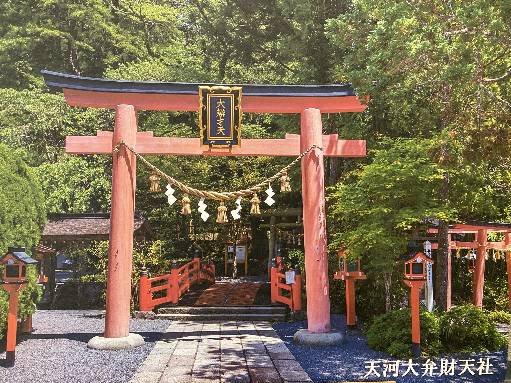
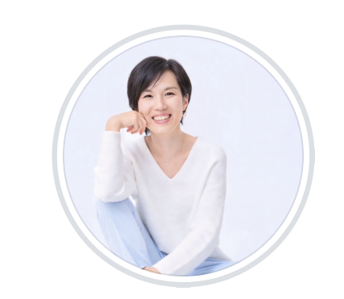
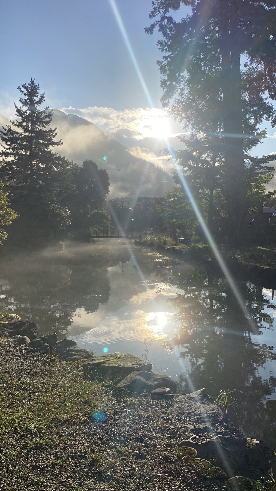
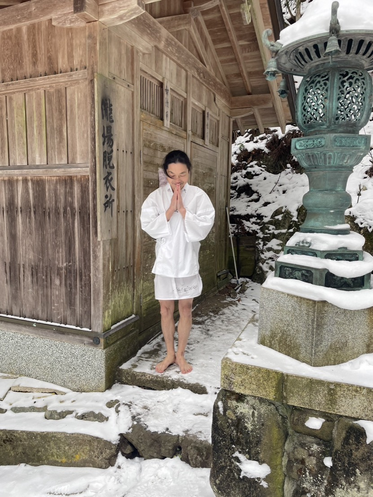

日常のいくつもの役割を一度そっと置き、
1300年の祈りと豊かな水の湧く天川村へ。
忘れていた自分自身の声を取り戻し、未来の一歩を言葉にする時間。

共同発起人 / 変容伴走・未来統合ワーク
これまで伴走してきたあなたへ。
いつも頑張ってきた身体と心を緩め、天川の静寂の中で一緒に『心音』を聴きましょう。
いつも私と出会ってくれて、本当にありがとうございます。
ふと立ち止まったとき、心の奥でこんなことを感じたことはありませんか？
「お母さんとしての私」「妻としての私」「仕事での私」「頼られる私」……。
周囲の期待に応え、誰かのために懸命に役割を果たしてきた日々。それは決して間違っていなかったし、誇れる大切な時間です。
だけど40代、50代を迎えた今、理由のない疲れや「これから私はどう生きたいんだろう」という静かな問いが聴こえてくることがあります。
何かを新しく付け足す必要はありません。これまでの役割を否定する必要もありません。
ただ、日常の重い「鎧」を一度そっと横に置いて、童心にかえり、あなた自身の「心音（こころね）」を聴き直す時間をつくりたい。
だからこそ、いつものセッションルームではなく、私自身が深く感応した特別な場所——天川村で、少人数の大切な皆さんとこの3日間を過ごしたいと願っています。
天川村は、単なる映える観光地でも、安易な癒やしを消費する場所でもありません。
修験道1300年の祈りと、清らかな水・山・風の音が満ちる土地です。
都心の忙しない情報の中で、私たちの脳と身体は「どう振る舞うべきか」の認知で緊張し続けています。
天川の清流に触れ、冷涼な森の空気と静寂に身体をあずけると、理屈ではなく身体の緊張が解けていきます。
前田薫が探求する「天中道（てんちゅうどう）」では、無理に自分を変えようとはしません。
身体の反応に気づき、事実と認知の意味づけを分け、自分の内側にある「本当の価値観」から未来を選び直すこと。天川の場は、そのための純粋な余白と心理的安全性を守ってくれます。

よっちゃんが心音を聴き、未来を言葉にする。かおるちゃんが天川と天中道の場を守る。ひとたんが食と暮らしから、心と身体が緩む土台をつくる。三人の違いが重なることで、このリトリートは成り立っています。
女性たちの心の奥にある「心音（こころね）」を捉え、感情の壁を一緒に越えていく変容支援の専門家。
リトリートでは、一人ひとりが自分の心音を聴き取り、未来のセルフイメージを言葉にして仲間と分かち合い、互いに応援し合う安全で温かいワークを担当します。

天川村の拠点づくりと、中庸道・修験道・天中道の実践体系を探求する場の設計者。
答えを与えるのではなく、天川の自然、地域、寺社、坐禅、対話をつなぎ、参加者が自分自身の言葉を安全に聴き出せる「場の構造と余白」をしっかりと守ります。
食と暮らしの伴走者／コーチ
かおるちゃんが「自分にとってナンバーワンのコーチ」と心から信頼する人。発酵と手仕事のある暮らしを、日々実践しています。
自家製のぬか漬け、味噌、梅干し。時間をかけて育ててきた発酵食と、天川の季節や素材を生かした手作りの精進料理で、三日間の食卓を整えます。食べること、待つこと、共に暮らすことも、人が自分へ戻るための大切な伴走です。
観光ツアーのように予定を詰め込むのではなく、身体を預け、静けさへ還り、自分の言葉を取り戻す順番を大切に設計しています。
私たちは、このリトリートにおいて誠実でありたいと考えています。
❌ 「人生が劇的に変わる」といった誇大広告や変化の保証はいたしません。
あなたを「欠けている人」として扱うこともありません。これまで生きてきたすべての時間は、あなたにとって大切な財産です。
⭕ 私たちが約束するのは、安心して鎧を脱げる「本物の場と余白」です。
答えを教え込むのではなく、天川の場と三人の伴走を通じて、あなた自身が自分の言葉を聴き、納得のいく未来の一歩を選び取れる環境を全力で守ります。
比較検討用v1案としての現時点の開催スペックです。未確定事項は「調整中」として誠実に記載しています。
| 開催日程 | 2026年10月16日（金）〜 10月18日（日）［2泊3日］ 日程案確定 |
|---|---|
| 開催場所 | 奈良県吉野郡天川村 洞川温泉（宿泊候補：清緑庵） 予約・料金調整中 |
| 参加対象 | 女性限定 / 最大8名 （最小催行人数 3名案） 少人数設計 |
| 集合・解散 |
集合: 10月16日(金) 13:00 近鉄「下市口駅」案 解散: 10月18日(日) 15:00 同駅 案 送迎調整中 |
| 主な体験 | 天河大辨財天社、温泉、清緑庵滞在、望月ご住職坐禅（調整中）、登拝/水体験（天候優先）、よっちゃん未来統合ワーク、ひとたんの食と暮らしの場づくり |
| 三日間の食 | ひとたんの自家製ぬか漬け・味噌・梅干しと、手作りの精進料理を中心に設計 献立・アレルギー対応調整中 |
| 案内人 | 仲川よしの（よっちゃん）、前田薫（かおるちゃん）、ひとたん |
※申込URLは調整中のため、現在はよっちゃんへの直接連絡・事前相談を承っております。
忙しい日常からほんの少しだけ離れて、自分を愛し、新しい一歩を自分の言葉にする3日間。
天川の地で、よっちゃん、かおるちゃん、ひとたんが笑顔でお待ちしています。